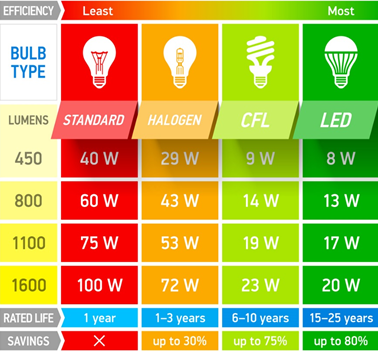
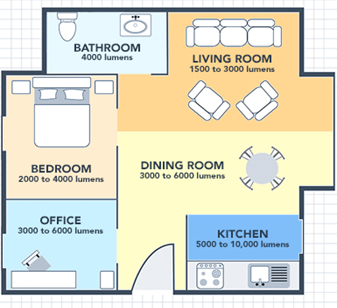

What You Should Know - Vernier Elementary Energy Efficiency: Save Energy at School
 Important Vocabulary
Important Vocabulary
- Data - facts and numbers collected together to help you share information
- Collect - to bring or gather together
- Bar Graph - a chart or graph that is a visual representation of data
- Scale - a range of values used for measuring data
- Axis - a fixed reference line for the measurement of data
- Lumens - the brightness or the amount of light you see from a light source when lit
Types of Bulbs
There are a few different light bulbs that you may see in your house and your school. Compact fluorescent (CFL) and light-emitting diode (LED) bulbs fit most light sockets and are the most energy-efficient. Fluorescent bulbs are shaped like tubes and are filled with mercury gas that shines when electricity is added. They use less energy than incandescent bulbs. Incandescent bulbs are also called standard bulbs. They are still common in our homes and use a filament that glows inside to generate light. They do not last as long as CFL and LED bulbs, and they are the least energy efficient. Halogen bulbs are similar to incandescent bulbs because they have a filament inside which heats and glows. But they also have halogen gas, which makes them last longer and use less energy than an incandescent bulb.

In 2007, the United States Congress passed the Energy Independence and Security Act, which set new standards for light bulbs’ energy efficiency. Incandescent bulbs are being phased out for longer-lasting and lower-energy-consuming light bulbs like compact fluorescent and light-emitting diode light bulbs.
What are Watts, Volts, and Lumens?
When we talk about light bulbs, people use a few different words to describe them. Watts are the wattage or the amount of power (energy during a certain amount of time) that light bulbs use. Volts are the voltage or electrical pressure that goes into the bulb from the electrical outlet. It is important for safety and efficiency that your light bulb matches the light fixture’s voltage requirements. Lumens are the brightness or the amount of light you see from the bulb when lit. The most efficient bulbs generate more lumens using fewer watts.
Picking the Best Bulbs
Most people buy light bulbs with a specific wattage and voltage instead of considering what strength of light they want in their space. Most spaces are overly lit, wasting energy that is not needed for the stuff in that room. Think about how bright you need a space to be when you think about light bulbs. How many lumens do you need in your space? The table shows the recommended lumen rating for different spaces in your home.
What spaces have the highest lumens? Why do you think that they have high lumens? What space has the lowest lumens? Why do you think that they have the lowest lumens?
What Is a Bar Graph?
 A bar graph is a chart or graph that shows a visual representation of data. Bar graphs use visual representations of data to help people make comparisons and look for patterns and trends. Sometimes people use bar graphs to better understand information from surveys or data charts. Bar graphs work best when there is categorical data or data that is grouped into different categories.
A bar graph is a chart or graph that shows a visual representation of data. Bar graphs use visual representations of data to help people make comparisons and look for patterns and trends. Sometimes people use bar graphs to better understand information from surveys or data charts. Bar graphs work best when there is categorical data or data that is grouped into different categories.
To create a bar graph, start by giving the bar graph a title that describes the data. Next, draw the vertical and horizontal axes. Label the horizontal axis(i.e. Type of Bulbs). Write the names of bulbs where the bars will be (i.e. Incandescent, Halogen, etc.). Label the vertical axis (i.e. Number of Lumens). Decide on the scale. Remember to consider the least and the greatest number on the graph—for instance, increments of 1, 5, 10, etc. Draw a bar to show the total lumens for each bulb.
Two-Step Word Problem
A two-step word problem is a problem that requires you to perform two steps to solve the problem. An example would be Franco has 46 coins in his collection. His dad gives him 18 more. Georgia has 61 coins in her collection. Who has more coins?
Career Connection and Real-World Application
Data in Careers
Many types of professionals collect data and information and then present that data using different types of graphs. Statisticians design surveys and experiments to collect data. Statisticians use different graphs, such as bar graphs and picture graphs, to present their data. Economists research and analyze information about the economy. They use graphs to present the results of their studies. Additionally, people who work in marketing learn about what people buy and sell. To help businesses make money, marketers present graphs to show important data about what people buy and sell.